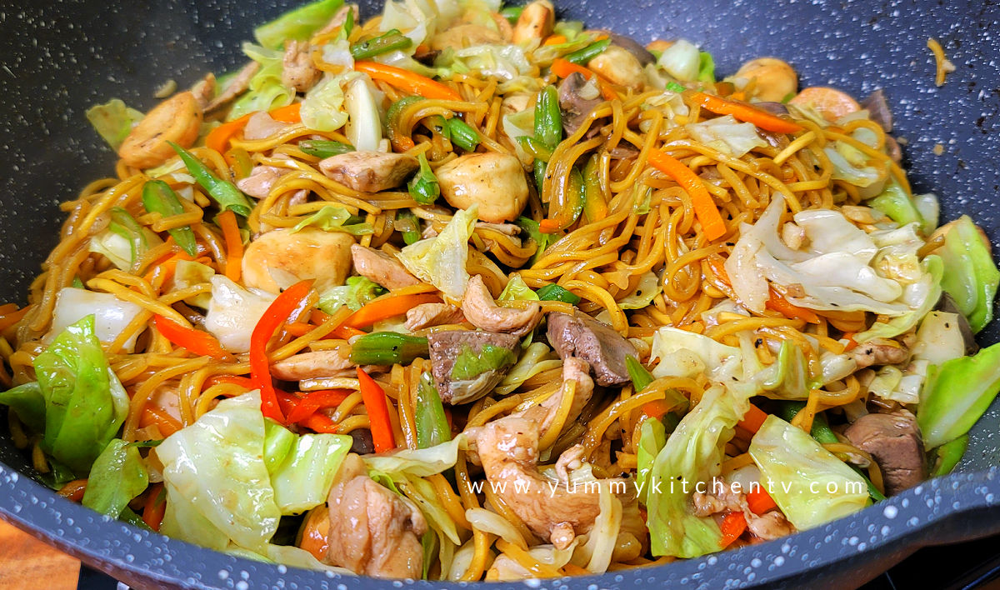

PANCIT CANTON GUISADO

This is a yummy classic pancit-canton
This recipe is an all time classic, honest and simple!
Ingredients:
- Packed noodles
- Vegetable pack
- Luncheon Meat
- Garlic
- Onion
- Magic Sarap
Steps to make the dish!
- Fry the garlic and onion
- After the garlic and onion smells fragrent, add your noodles
- After the noodles is coocked, throw in your veggies
- After the veggies are coocked, throw in your meat
- After everything is cooked, serve it!